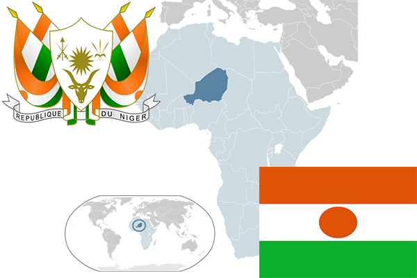

To`liq nomi: Niger Respublikasi
Region: Gʻarbiy Afrika
Qonunchilik shakli: Respublika
Mustaqillik kuni: 3 avgust 1960 (Fransiyadan)
Poytaxt: Niamey
Maydoni: 1,267,000 km²
Chegaradosh davlatlari: Chad, Nigeriya, Benin, Burkina-Faso, Mali, Jazoir
Aholisi: 20,672,987 (2016-yil)
Aholi zichligi: 12.1/km2
Aholining o`rtacha yoshi: 62,09 (2015-yil)
Rasmiy tili: Fransuz
Dini: 95% islom, 5% xristian
Pul birligi: G’arbiy Afrika Franki
Telefon prefiksi: +227
Internet domen: .ne
Xalqaro tashkilotlarga a`zoligi: BMT
Dengiz va okeanlarga chiqishi: Yo’q
YIM: Butun: $8.141 mlrd (2017-yil) Jon boshiga: $434
Yirik shaharlari: Niamey, Agadez, Zinder